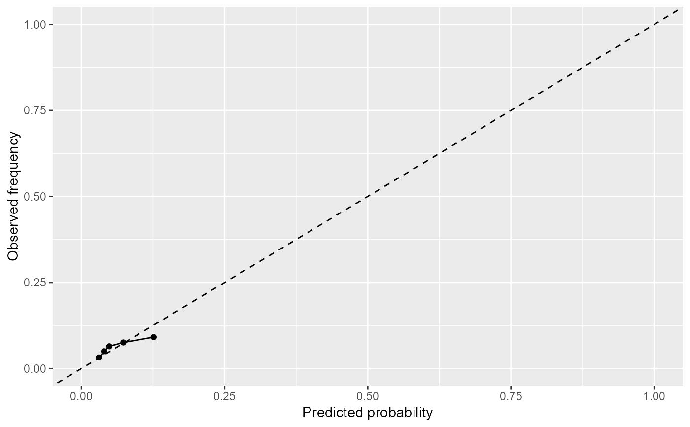
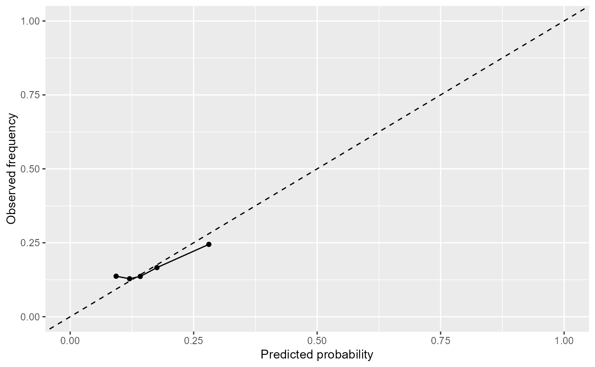

Creates a calibration plot for the landmark model fitted by fit_LME_landmark_model or fit_LOCF_landmark_model.
This function plots the observed frequencies of the event of interest against the predicted probabilities of the event of interest.
# S3 method for landmark
plot(x, x_L, n, x_lims, y_lims, ...)| x | Object inheriting the class |
|---|---|
| x_L | Numeric specifying the landmark time. This indicates which landmark model in |
| n | Numeric specifying the number of bins to use. |
| x_lims | Vector of length 2 specifying the limits of the x axes |
| y_lims | Vector of length 2 specifying the limits of the y axes |
| ... | Arguments passed to |
Calibration plot showing the value of predicted probabilities against observed frequencies, with a y=x line.
This function bins the predicted probabilities of the event of interest into n bins. The event of interest is the event with
event_status=1 when fitting the landmark model. For each of the n sets of individuals, the Aalen-Johansen estimator is fit to that set
and used to calculate the risk of an event at the horizon time. The predictions (from the landmark model) and the observed frequencies
(from the Aalen-Johansen estimator) are plotted against each other. For a perfect prediction model, the points will be plotted along the y=x line.
library(Landmarking)
data(data_repeat_outcomes)
data_model_landmark_LOCF <-
fit_LOCF_landmark(
data_long = data_repeat_outcomes,
x_L = c(60, 61),
x_hor = c(65, 66),
covariates =
c("ethnicity", "smoking", "diabetes", "sbp_stnd", "tchdl_stnd"),
covariates_time =
c(rep("response_time_sbp_stnd", 4), "response_time_tchdl_stnd"),
k = 10,
individual_id = "id",
event_time = "event_time",
event_status = "event_status",
survival_submodel = "cause_specific"
)
#> Warning: 922 individuals have been removed from the model building as they are not in the risk set at landmark age 60
#> Warning: 670 individuals have been removed from the model building as they are not in the risk set at landmark age 61
#> [1] "Fitting longitudinal submodel, landmark age 60"
#> [1] "Complete, landmark age 60"
#> [1] "Fitting survival submodel, landmark age 60"
#> Warning: Loglik converged before variable 2 ; coefficient may be infinite.
#> [1] "Complete, landmark age 60"
#> [1] "Fitting longitudinal submodel, landmark age 61"
#> [1] "Complete, landmark age 61"
#> [1] "Fitting survival submodel, landmark age 61"
#> Warning: Loglik converged before variable 2 ; coefficient may be infinite.
#> [1] "Complete, landmark age 61"
plot(x=data_model_landmark_LOCF,x_L=60,n=5)

plot(x=data_model_landmark_LOCF,x_L=61,n=5)
